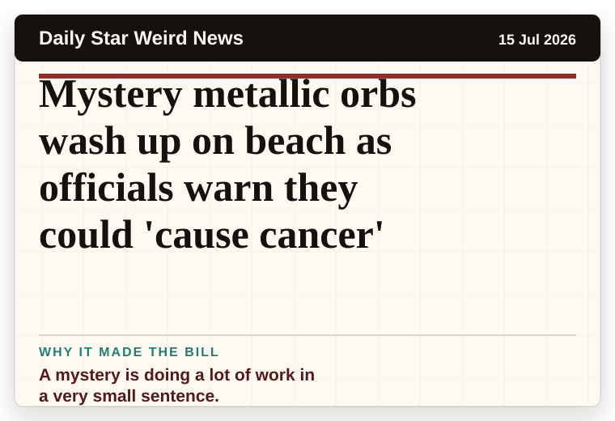

NT News
Australia
Nigel Farage left with unusual challenger after parties withdraw from by-election
The headline is already trying not to laugh.
A small daily scrape of English-language print news headlines that made the room laugh, blink, or ask one more question.
Record updated: 15 Jul 2026, 07:52 AM AEST
These are linked headlines from the latest run. The script avoids tragedy, heavy harm, and scarebait prediction stories, then looks for deadpan wording, strange scale, accidental comedy, and official sentences that have wandered into the wrong room.
The headline is already trying not to laugh.

The headline is already trying not to laugh.

A household object has somehow reached the news desk.

A household object has somehow reached the news desk.

A very ordinary object has wandered into serious news.

A mystery is doing a lot of work in a very small sentence.
Print-style news has a special kind of accidental theatre. A headline can be perfectly serious and still sound like a setup. This site collects the gentle ones, points back to the original source, and leaves the heavy stories alone.
The joke is not the news. The joke is often the tiny human wording that slips through the news.
Maybe this stays as a headline board. Maybe it becomes a relaxed local comedy night where people can try five minutes, read a strange headline, or simply sit in the room and enjoy the courage.
Small sets, easy entry, and enough space for first-timers to test one idea without needing a whole act.
Warm, dry, plain-speaking humour that suits a community hall, a bowls club corner, or a quiet night at a venue.
The question is open. If people want it, the format can grow from what the room actually enjoys.